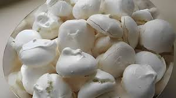

Como fazer um suspiro
passo a passo

Ingredientes:
- 5 Claras
- 4 Cícaras de açúcar
- 1 Limão
Modo de Preparo
- Faça a sua neve com as claras de ovos, deixando bem consistente.
- Na batedeira, vá acrescentando o açúcar, aos poucos.
- Coloque em uma refratária de vidro (ou algo assim) e rale um pouco de casquinha de limão só
para dar o toquinho final.
- Leve ao forno a 100º C.
- Deixe por, aproximadamente, 10 minutos e se não crescer, pode aumentar para uns 15 minutos.